Warto być eko! Doskonale zdajemy sobie sprawę jak istotną kwestią jest dbanie o naszą planetę. Chroniąc Ziemię
zapewniamy zdrowie sobie i kolejnym pokoleniom, którym przyjdzie na niej żyć. Niestety przez działalność człowieka natura
znajduję się w opłakanym stanie. Nie jesteśmy w stanie całkowicie wyeliminować plastiku z oceanu, ani zahamować globalne
ocieplenie, jednak przez zmianę codziennych nawyków dokładamy naszą cegiełkę i przyczyniamy się do ochrony środowiska.
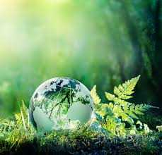
Oto kilka zmin, które możesz wprowadzić w życie w celu ratowania naszej planety:
- Nie kupój jednorazowych reklamówek.
Jest lekka, tania, pojemna i niestety zaskakująco trwała. Używamy jej jednorazowo, przez około pół godziny. Potem ląduje w koszu, skąd przeważnie trafia na składowisko odpadów. W dodatku rozkłada się około 500 lat! 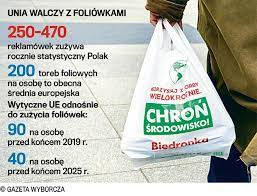
- Segreguj śmieci.
Segregacja odpadów pozwala w następnym etapie na przetworzenie ich w procesie recyklingu, by powtórnie wykorzystać je w celu wytworzenia nowego produktu. Wywóz odpadów segregowanych jest więc bardzo ważny i potrzebny. Dzięki pozyskiwaniu surowców wtórnych zmniejsza się zużycie zasobów naturalnych, co niewątpliwie przynosi korzyść środowisku.
Rozdzielając śmieci w gospodarstwie domowym – ograniczamy tony, które zanieczyściłyby środowisko, co z kolei niesie za sobą zagrożenie dla życia i zdrowia ludzi.
Przykładowo oddzielanie makulatury przyczynia się do ograniczenia zużycia energii, wody i zanieczyszczenia powietrza oraz zmniejszenia wycinki drzew. Ze stu ton makulatury można wyprodukować 90 ton papieru do ponownego użytku – a wyprodukowanie 1 tony papieru wymaga ścięcia 17 drzew.
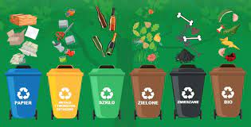
- Wybieraj rower albo spacer zamiast samochodu.
Rower, w przeciwieństwie do samochodu nie hałasuje, nie truje, nie zanieczyszcza środowiska. Spaliny zawierają tysiące trujących substancji chemicznych powodujących choroby i pogarszających jakość życia. Rower to najbardziej ekologiczny i ekonomiczny środek transportu w mieście.
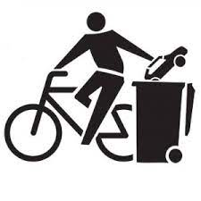
- Oczczędzaj wodę
Oszczędzanie wody przyczynia się do wydłużenia życia jezior i rzek, które są gwarancją zdrowych ekosystemów na całym świecie.
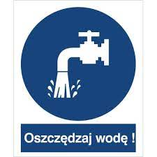
- Korzystaj z ekologicznych kosmetyków.
Kosmetyki ekologiczne nie są testowane na zwierzętach, a do ich produkcji i wysyłki używane są wyłącznie materiały pochodzenia ekologicznego z recyklingu (etykiety, opakowania).Kosmetyki naturalne są przyjazne skórze ze względu na stosowanie łagodnych i naturalnych substancji myjących, emulgatorów i zapachów.
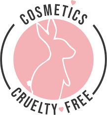
- Kupuj produkty z recyklingu lub też nadające się do recyklingu .
Kupowanie produktów pochodzących z recyklingu sprawia, że materiały, które normalnie zostałyby sklasyfikowane jako odpady i po prostu zostawione na wysypisku, mogą być wykorzystane ponownie. Poprzez wtórne wykorzystanie materiałów jesteśmy w stanie zredukować zapotrzebowanie na nowe surowce.
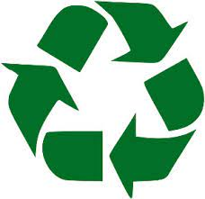
- Zamiast wyrzucać ubrania, oddaj je do instytucji charytatywnych
Niezależnie od tego, czy wykonane są z tkanin naturalnych czy sztucznych, to wyrzucamy je do zmieszanych. Wyrzucaj tylko te ubrania, które nie nadają się do noszenia. Pozostałe możesz oddać na zbiórkę dla potrzebujących np. wrzucić do specjalnych kontenerów jak na rysunku poniżej.
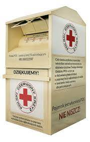
- Pakuj drugie śniadanie w pojemniki wielokrotnego użytku.
Zabierając ze sobą do pracy pojemnik z drugim śniadaniem i lunchem masz pewność, że dania są zdrowe, dobrze zbilansowane i przygotowane ze świeżych produktów, które sam wybrałeś. Wiesz też, że potrawy nie zawierają szkodliwych konserwantów czy wzmacniaczy smaku.
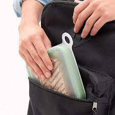
- Pij kranówkę zamiast wody butelkowanej.
Używanie wody z kranu jest dwieście razy tańsze niż kupowanie butelkowanej, a przy tym korzystne dla środowiska: odkręcając kran, zużywamy mniej plastiku i… mniej wody. Niemal wszystkie firmy wodociągowe w większych miastach Polski prowadzą akcje zachęcające do picia wody z kranu.
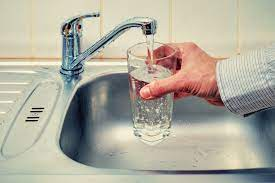
- Szanuj zieleń.
Nie parkuj ani nie deptaj trawnika w miejscu zabronionym.
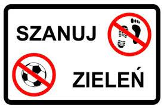
Oto kilka przydatnych stron, które pomogą ci przybliżyć temat ekologii, tego jak ważne jest dbanie o środowisko naturalne oraz pomogą ci wprowadzić zdrowe zmiany w życie: